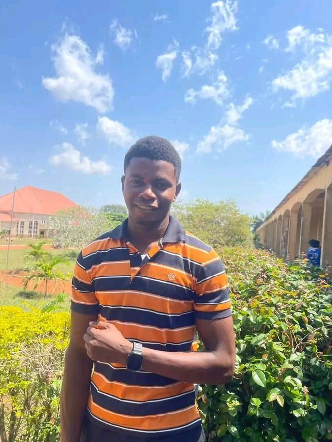

About the Claverate Missionaries

Who We Are
The Congregation of Sons of St. Peter Claver (SSPC), also known as the Claverate Missionaries, is a young indigenous Nigerian religious congregation of priests and brothers. We draw our inspiration from the life and spirituality of St. Peter Claver, the Jesuit saint who dedicated his life to serving enslaved Africans in Cartagena, Colombia, and became known as the "Slave of the Slaves."
Our Leadership

Brother Kelvin Umoh
Secretary General / Postulancy Master
Our History
Founded in the early 21st century by the grace of the Holy Spirit, our congregation is a response to the call for authentic missionary service within the Nigerian Church. We are a young mission — still growing, still striving, and still building. Despite our youth, we are rooted in the ancient tradition of religious life and committed to the formation of holy, zealous, and compassionate priests and brothers.
Our Patron
St. Peter Claver (1580–1654) was a Spanish Jesuit priest who ministered to enslaved Africans in Cartagena, Colombia. He entered the slave ships, treated the sick, taught the faith, and baptized over 300,000 souls. He declared himself the "slave of the slaves forever." His feast day is September 9. He is the patron of slaves, of Colombia, and of all missionary work to the African diaspora.